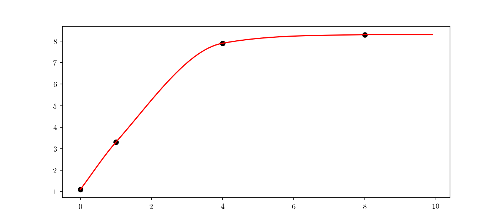

Monotonic Cubic Spline interpolation (with some Rust)
Monotonic Cubic Spline interpolation (MCSI) is a popular and useful method which fits a smooth, continuous function through discrete data. MCSI has several applications in the field of computer vision and trajectory fitting. MCSI further guarantees monotonicity of the smoothed approximation, something which a cubic spline approximation alone cannot. In this post I’ll show how to implement the method developed by F. N. Fritsch and R. E. Carlson [Fritsch2005] in the Rust programming language.
Rust
Why Rust? Definitely this is a type of solution so simple that it can be implemented in pratically any programming language we can think of. However, I do find that the best way to get acquainted with a new language and its concepts is precisely to try to implement a simple and well-know solution. Although this post does not intend to be an introduction to the Rust language, some of the fundamentals will be presented as we go along.
Idiomatic Rust Object-Oriented Programming (OOP) has several characteristics which differ significantly from “traditional” OOP languages.
Rust achieves data and behaviour encapsulation by means of defining data structure blueprints (called struct) and then
defining their behaviour though a concrete implementation (through impl). As an example, a simple “class” Foo
would consist of:
struct Foo {
}
impl Foo {
fn new() -> Foo {
return Foo {};
}
fn method(&mut self) {}
fn static_method() {}
}
pub fn main() {
let mut f = Foo::new();
f.method();
Foo::static_method();
}
The “constructor” is defined typically as new(), but any “static” method which returns an initialised struct can be a constructor and “object” methods include the passing of the self instance not unlike languages such as Python. The &mut self refers to the control or exclusive access to self and it is not directly related to mut mutability control. These concepts touch on Rust's borrowing and ownership model which, unfortunately, are way beyond the scope of this blog post. A nice introduction is provided by the "Rust programming book" available here.
Our implementation aims at building a MCSI class MonotonicCubicSpline by splitting the algorithm into the slope calculation at construction time, a Hermite interpolation function and a partial application function generator. This will follow the general structure
pub struct MonotonicCubicSpline {
m_x: Vec<f64>,
m_y: Vec<f64>,
m_m: Vec<f64>
}
impl MonotonicCubicSpline {
pub fn new(x : &Vec<f64>, y : &Vec<f64>) -> MonotonicCubicSpline {
// …
}
pub fn hermite(point: f64, x : (f64, f64), y: (f64, f64), m: (f64, f64)) -> f64 {
// …
}
pub fn interpolate(&mut self, point : f64) -> f64 {
// …
}
fn partial(x: Vec<f64>, y: Vec<f64>) -> impl Fn(f64) -> f64 {
// …
}
}
Vec is a vector, a typed growable collection available in Rust's standard library with documentation available here.
Monotonic Cubic Splines
MCSI hinges on the concept of cubic Hermite interpolators. The Hermite interpolation for the unit interval for a generic interval \((x_k,x_{k+1})\) is
The \(h_{\star}\) functions are usually called the Hermite basis functions in the literature and here we will use the factorised forms of:
This can be rewritten as
where
This associated Rust method is the above mentioned “static” MonotonicCubicSpline::hermite():
pub fn hermite(point: f64, x : (f64, f64), y: (f64, f64), m: (f64, f64)) -> f64 {
let h = x.1 - x.0;
let t = (point - x.0) / h;
return (y.0 (1.0 + 2.0 t) + h m.0 t) (1.0 - t) (1.0 - t)
+ (y.1 (3.0 - 2.0 t) + h m.1 (t - 1.0)) t t;
}
where the tuples correspond to \(x \to (x_k, x_{k+1})\), \(t \to (y_k, y_{k+1})\) and \(m \to (m_k, m_{k+1})\)
For a series of data points \((x_k, y_k)\) with \(k=1,\dots,n\) we then calculate the slopes of the secant lines between consecutive points, that is:
with \(\Delta y_k = y_{k+1}-y_k\) and \(\Delta x_k\) as defined previously.
Since the data is represented by the vectors x : Vec<f64> and y : Vec<f64> we implement this in the “constructor”:
let mut secants = vec![0.0 ; n - 1];
let mut slopes = vec![0.0 ; n];
for i in 0..(n-1) {
let dx = x[i + 1] - x[i];
let dy = y[i + 1] - y[i];
secants[i] = dy / dx;
}
The next step is to average the secants in order to get the tangents, such that
.
This is achieved by the code:
slopes[0] = secants[0];
for i in 1..(n-1) {
slopes[i] = (secants[i - 1] + secants[i]) * 0.5;
}
slopes[n - 1] = secants[n - 2];
By definition, we want to ensure monotonicity of the interpolated points, but to guarantee this we must avoid the interpolation spline to go too far from a certain radius of the control points. If we define \(\alpha_k\) and \(\beta_k\) as
to ensure the monotonicity of the interpolation we can impose the following constraint on the above quantities:
that is
Typically the vector \((\alpha_k, \beta_k)\) is restricted to a circle of radius 3, that is
and then setting
where
One of the ways in which Rust implements polymorphism is through method dispatch. The f64 primitive provides a shorthand for the quantity \(\sqrt{\alpha^2_k + \beta^2_k}\) as \(\alpha.\text{hypot}(\beta)\). The relevant Rust code will then be:
for i in 0..(n-1) {
if secants[i] == 0.0 {
slopes[i] = 0.0;
slopes[i + 1] = 0.0;
} else {
let alpha = slopes[i] / secants[i];
let beta = slopes[i + 1] / secants[i];
let h = alpha.hypot(beta);
if h > 3.0 {
let t = 3.0 / h;
slopes[i] = t * alpha * secants[i];
slopes[i + 1] = t * beta * secants[i];
}
}
}
We are now able to define a “smooth function” generator using MCSI. We generate a smooth function \(g(\cdot)\) given a set of \((x_k, y_k)\) points, such that
Partial application
Before anything, it is important to recall the difference between partial application and currying, since the two are (incorrectly) used interchangeably quite often. Function currying allows to factor functions with multiple arguments into a chain of single-argument functions, that is
The concept is prevalent in functional programming, since its initial formalisation [Curry1958]. Partial application, however, generally aims at using an existing function conditioned on some argument as a basis to build functions with a reduced arity. In this case this would be useful since ultimately we want to create a smooth, continuous function based on the control points \((x_k, y_k)\). The partial application implementation is done in Rust as
pub fn partial(x: Vec<f64>, y: Vec<f64>) -> impl Fn(f64) -> f64 {
move |p| {
let mut spline = MonotonicCubicSpline::new(&x, &y);
spline.interpolate(p)
}
}
An example of how to generate a concrete smoothed continuous function from a set of control points can be:
let x = vec![0.0, 2.0, 3.0, 10.0];
let y = vec![1.0, 4.0, 8.0, 10.5];
let g = partial(x, y);
// calculate an interpolated point
let point = g(0.39);

The full code can be found here.
References
[Fritsch2005] Fritsch, F. N., & Carlson, R. E. (2005). Monotone Piecewise Cubic Interpolation. SIAM Journal on Numerical Analysis. https://doi.org/10.1137/0717021 🔝
[Curry1958] Curry, Haskell; Feys, Robert (1958). Combinatory logic. I (2 ed.). Amsterdam, Netherlands: North-Holland Publishing Company. 🔝